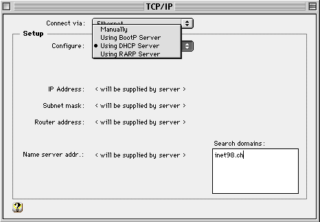
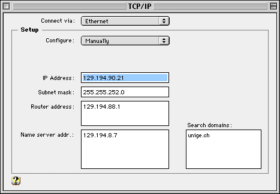
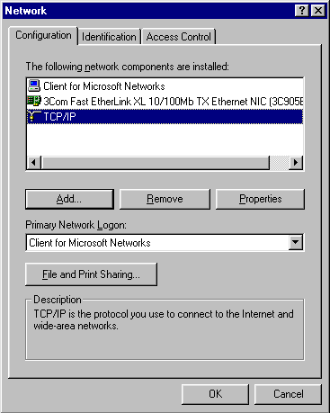
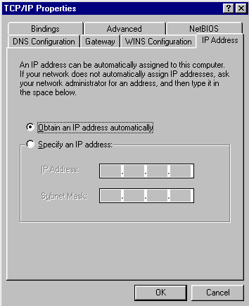
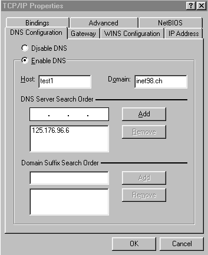

http://cuiwww.unige.ch |
Connecting your Portable
|

http://www.inet98.ch |
Overview
This page describes how to connect your own portable PC or MAC to the INET '98 Network in order to both make presentations in the Conference Rooms or to work in the Internet Access Room (IAR). A row of tables is attributed for that purpose in the IAR, open from 7:30 AM to 10:00 PM non-stop.
The equipment of the Speaker Ready Room is an exact match to the one at the Conference Rooms where presentations are effectively made. You can configure your portable to work together with the LCD Projector in the SR room from 7:30 AM to 6:00 PM.
Two options are offered to you to connect your portable to the INET '98 network: DHCP (Dynamic Host Configuration Protocol) and Static IP addressing.
For unanswered questions, please refer to the Q&A Forum at http://www.inet98.ch/forum or (for urgent questions only) ask an IT support member at Bureau 4 .
Connecting a portable MAC
- Using a dynamically assigned address (DHCP)
From the Apple menu, choose Control Panel, TCP/IP, then DHCP Server:

- Using a static IP address
Please use static IP addressing only if you have problems with DHCP, for example if DHCP configuration is not available on your system.
Please contact an IT staff member at Bureau 4 that will provide you with a static IP address and the Subnet Mask.

Connecting a Portable PC
- Using a dynamically assigned address (DHCP)
Under Windows 95, choose the Start menu, Parameters, Control Panel, Network:

You must have TCP/IP installed, otherwise choose the Add button, Protocols, find TCP/IP and follow the instructions that appear on the screen.
Select TCP/IP in the list and choose Properties:

Confirm the Obtain an IP address automatically selection.
- Using a static IP address
Please use static IP addressing only if you have problems with DHCP, for example if DHCP configuration is not available on your system.
Please contact an IT staff member at Bureau 4 that will provide you with a static IP address and the Subnet Mask.
- Configure DNS for both static and dynamic IP addressing
Fill in the DNS menu as shown below:
